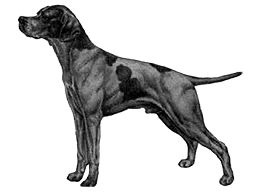

Pointer - standard

Původ:
Velká Británie
Použití:
stavěcí pes (ohař)
Klasifikace F.C.I.:
skupina 7 – stavěcí psi (ohaři)
Sekce 2.1 – britští a irští stavěcí psi, pointer
S pracovní zkouškou
Celkový vzhled
Pointer je harmonicky stavěný, celkově vyvážený. Působí dojmem síly a pružnosti. Jeho celkový
profil je tvořen půvabnými křivkami.
Chování / povaha
Aristokratické. Je aktivní a působí dojmem síly, odolnosti a rychlosti. Má dobrý charakter,
vyrovnaou povahu.
Oblast mozková
Mozkovna
je středně široká, ve správném poměru s délkou nosního hřbetu. Týlní hrbol je dobře patrný.
Stop
je výrazný
Část obličejová
Nosní houba
je tmavě zbarvená, ale může být i světlejší v případě, že se jedná o zbarvení citrónově bílé.
Je
měkká a vlhká, nozdry jsou široké
Nosní hřbet
je poněkud proláklý, končí v linii nodní houby, čímž vypadá nosní linie prohnutá. Pod očima
je
mírně vpadlý.
Pysky
jsou dobře vyvinuté, pružné.
Čelisti / zuby
Čelisti jsou silné, mají perfektní nůžkový skus, pravidelný a kompletní, což značí, že horní
řezáky těsně překrývají spodní a jsou správně postaveny v čelistech.
Líce
jařmové oblouky nejsou příliš vystupující.
Oči
jsou umístěny v poloviční vzdálenosti mezi týlním hrbolem a nosem. Jejich pohled je živý a
dobrý
(milý). Jsou oříškové nebo hnědé, v závislosti na zbarvení srsti. Nejsou ani ani vyvalené, ani vyplašené.
Pohled
není uhýbavý. Jejich ohraničení je tmavé, ale může být i světlejší v případě citrónově bílého zbarvení
srsti.
Uši
jejich kůže je jemná. Jsou nasazené dost vysoko. Jsou zavěšené podle hlavy, jsou středně
dlouhé.
Na konci jsou mírně zašpičatělé.
Krk
dlouhý, svalnatý, poněkud klenutý, dobře zasazený mezi lopatkami, nemá lalok (je suchý).
Tělo
Bedra
silná, mohutně osvalená a mírně klenutá. Jsou krátká.
Hrudník
Přesně tak široký, jak je nezbytné, aby byl dostatečně prostorný ve sternální partii.
Dosahuje do
výšky loktů. Žebra jsou dosti klenutá, dostatečně vyvinutá směrem k zadní části hrudního koše, zkracují se
postupně směrem k bedrům.
Ocas
je středně dlouhý, u kořene silný, postupně zeštíhluje směrem ke špičce. Je dobře osrstěný
přiléhavou srstí a je nesen v úrovni hřbetu, aniž by měl tendenci přetáčet se vzhůru. Když je pes v pohybu,
ocas
se pohybuje ze strany na stranu.
Hrudní končetiny
Přední nohy od lokte až k zemi jsou rovné a pevné, se správně utvářenou kostrou. Kosti jsou
zaoblené. Klouby jsou silné a zřetelné.
Lopatky
Dlouhé, šikmo uložené se sklonem k zádi.
Lokty
jsou uloženy tak, aby měly dost prostoru pro pohyb, jsou nízko a nejsou vybočené ani vbočené.
Karpální kloub
Nevyčnívá z předního profilu nohy, tvoří nepatrný hrbolek na vnitřní straně.
Záprstí
je dost dlouhé, silné a pružné, s mírně šikmým sklonem.
Přední tlapky
tlapka je oválná; prsty jsou sevřené a správně klenuté, mají pevné polštářky.
Pánevní končetiny
Jsou velmi svalnaté.
Kyčle
kyčelní kosti jsou dobře uloženy a jsou patrné, ale nevyčnívají nad hřbetní linii.
Stehna
silně vyvinutá.
Klenní kloub
Správně zaúhlený.
Podkolení
svalnatá
Hlezna
rovná
Zadní tlapky
tlapka je oválná; prsty jsou sevřené a správně klenuté, mají pevné polštářky
Pohyb
vyrovnaný. Pes v pohybu pokrývá hodně terénu (má prostorný pohyb). Akce vychází ze zadních
nohou.
Lokty nejsou ani vbočené, ani nevybočují. V pohybu nesmí být nohy vysoko zvedány (vysoká akce) po způsobu
koně
Hackney (pohyb nesmí být ani s vysokou akcí, ani skákavý).
Vzhled
Srst
srst je jemná, krátká, tvrdá a rovnoměrně pokrývá povrch těla, je perfektně hladká, rovná a
pěkně
lesklá.
Zbarvení
Obvyklá zbarvení jsou:citrónová a bílá, oranžová a bílá, játrová a bílá, černá a bílá.
Zbarvení
jednobarevná či tříbarevná jsou rovněž korektní.
Výška
Psi
63 – 69 cm
Feny
61 – 66 cm
Vady
všechny odchylky od tohoto standardu musí být považovány za chyby a musí být penalizovány
podle
stupně jejich závažnosti a jejich vlivu na zdraví a pohodu psa a na možnost jeho tradičního pracovního
využití.
Vylučující vady:
Agresivita nebo bázlivost Všichni psi s viditelnými anomáliemi psychiky nebo chování musí být
diskvalifikováni.
NB
Všichni psi musí mít obě normálně vyvinutá varlata kompletně sestouplý v šourku.
Překlad do češtiny:
Helena Dvořáková
Datum zveřejnění platného standardu:
28.07.2009